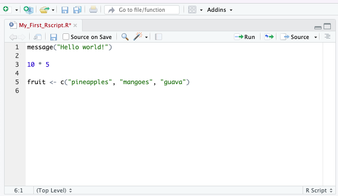

Lesson 1: Introduction to R and RStudio
This is the course handbook for WolfWorks: An introduction to R.
Objectives:
- Describe the purpose of the RStudio Script, Console, Environment, and Plots panes.
- Understand the concepts of absolute and relative file paths, and the purpose of a working directory.
- Use the built-in RStudio help interface to search for more information on R functions.
What are R and RStudio?
The term R refers to two things: (1) the programming language itself and (2) the software which interprets scripts written in the R language.
RStudio, which has now been re-branded as Posit, is an integrated development environment (IDE) which provides a user-friendly way to interact with the R software. To function correctly, RStudio needs R so both must be installed on your computer.
For additional information about RStudio please see the RStudio IDE Cheat Sheet.
Why use R?
There are many benefits to using R:
- R scripts are written in a linear manner, which makes the steps of your data analysis clear to both you and anyone else who should need to read it
- R code is great for reproducibility because the same results are obtained when using the same code to analyse the same data - this is increasingly a requirement for many journals and funding agencies
- R can integrated with other tools to generate manuscripts, PDF files and websites
- R is interdisciplinary and extensible with thousands of packages developed for specific analysis requirements e.g., image analysis, population genetics, GIS etc.
- R works on data of all shapes and sizes - once you can use R, it will make very little difference if your working with a small dataset (<100 entries) or huge dataset (millions of entries)
- R is free, open-source and cross-platform
- R has a large and welcoming community - lots of help is available online [see below]
The RStudio IDE
In order to begin using R, we first need to know our way around RStudio. RStudio consists of four “Panes”:
- The R console - for executing code
- The source - for scripts and documents
- The environment - for storing R objects from the current session
- The files, plots & help pane - various functions
These panes can be re-organised (relative size and position) to suit your working needs. To do this you can seeTools -> Global Options -> Pane Layout.
Some definitions
There is a certain terminology that is used when talking about using R. We will be using these key terms throughout the workshop:
- The term code can be used both to refer to the process of writing instructions in R and to the written instructions themselves
- We call each individual instruction a command
- To tell our computer system to follow the instructions, we execute or run the commands
The R console
By default, the R console appears in the bottom left-hand pane of your RStudio window. The console is the direct interface for the R programme. This is where commands are executed from.

We can type any command directly into the console and execute it by pressing Enter. Any output from the command will be displayed below it in the console. For example, we could use this area like a calculator. For example:
56 + 44## [1] 100By typing our command and pressing Enter, we have executed the code. Below we see two pieces of information. The first and most obvious output is the answer to the mathematical query that we executed - 100. In front of this we see [1]. To demonstrate what this [1] means, let’s execute the following code:
1:50## [1] 1 2 3 4 5 6 7 8 9 10 11 12 13 14 15 16 17 18 19 20 21 22 23 24 25 26 27 28 29 30 31 32 33
## [34] 34 35 36 37 38 39 40 41 42 43 44 45 46 47 48 49 50This command tells R to give us all numbers between 1 and 50, which it does. This time we have [1] and on the second line [26]. These numbers are R helping us to keep track of what number output we are looking at. This is particularly useful when the output of a command is long. R has told us that the second line starts with output number 26.
If R is ready to accept commands for execution, you will see the > prompt on the left hand side of the console. If R is in the middle of running something else and is not yet ready for more code, you will see a small red symbol appear at the top right-hand side of the pane. Once R has finished executing and is ready again, a new > prompt will appear. In some cases you may see a + prompt after attempting to execute a command. This means that the code you are trying to execute is unfinished in some way, for example missing a bracket (the most common explanation). If this happens, you can either provide the missing code by typing the ) and pressing Enter, or you can press Esc to cancel the execution, correct the code and try again.
To clear the console we can use Control + L. However, once the information stored on the console is cleared we will no longer have access to it. There is no reversing this clearance. Similarly, when we close RStudio and re-open it later, the console will automatically clear and none of our work will be saved.
The source and R scripts
Since code that is written and executed directly from the console cannot be saved, RStudio provides an alternative, more reproducible way to interact with R. Instead of writing in the console, we can use a script. A script is a plain text file in which we can write code and, most importantly, save code. An R script is written in the source pane, which by default is in the top left-hand pane of your RStudio window.

We can write our commands in the script in the same way that we did when using the console. We can then save this script as a file on our computer meaning that we can open it and re-run the code to get the exact same outputs.
When writing code into a script, the code will not automatically be executed. Instead, we need to pass the commands to the console to be run. To do this we use Control + Enter (you can also use Cmd + Return if you are using a Mac). As before, the code is then executed from the console and any outputs will be displayed there too. This means that the outputs of our script will not be saved, but the code to generate these outputs will be.
Note: Whilst we choose to write the bulk of our code in scripts so that it can be saved, there are some instances in which we may still want to use the console. For example, if we are just checking the name of an object (we will get onto objects in a minute) or the size of a variable (we’ll talk about variables too). Essentially, the script is for permanent code which we wish to save and re-run, the console is for temporary code which we only need in that moment.
The RStudio environment
The third pane in the top right-hand corner of the RStudio window has multiple tabs. We will only discuss the Environment tab, as this is arguably the most important and widely used.
The Environment keeps track of R objects and variables which have been created during the RStudio session (i.e., since opening RStudio). We will discuss this more later.
Files, Plots & Help
The final pane that you see in the bottom right-hand side of your RStudio window again contains several tabs.
What is a working directory?
Your working directory is the location on your computer where R will default to when reading or writing files. You can check where your current working directory is by typing getwd() into your console and executing.
getwd()## [1] "/Users/User/repos/Wolfson_Intro_R_Course"You can think of your working directory as a room in which R is sat. When you want R to fetch something from your computer, a data file for example, you have to give R a path to get to there and this path needs to start from where R already is i.e., your working directory. For example, if I wanted to load the “” file from within my “data” folder, I’d need to tell R to first go into “data”, then grab ““. Hence, the relative path would look like this:
"data/filename"
Alternatively, if I want to access a file that is not below my working directory in the file (i.e., I need to go leave the room to find another door), I can use ../ to mean go up one level. For example, if I wanted to access another folder within “repos”, I would need to leave the “Wolfson_Intro_R” room (which is my current working directory) and enter “repos”, so my filepath would be:
"../repos"
These are what we call relative file paths - the file path is given relative to our working directory. The alternative is to provide an absolute file path, which starts at the highest point in your computer system. For example, to access my “” file via an absolute path I would use:
"/Users/User/repos/Wolfson_Intro_R/data/filename"
For the rest of this course we will be using relative file paths from our working directory. Make sure your working directory contains a folder called “Data” with the relevant files in. If you wish to change your working directory to the place where you have this folder, you can use setwd() and provide an absolute file path to where the directory should be.
Getting help with R
This one-day course will introduce you to many of the key concepts that are used in R, but is far from extensive. The best way to become proficient at R is to use it - frequently. Although this may seem daunting at first, there are many places that you can turn to for help.
The built in RStudio help interface
As we saw briefly above, RStudio has a Help tab within the bottom right-hand pane. Here you can search for key words which relate to the problem that you’re having.
I know the name of the function I want to use, but I’m not sure how to use it You can use a single question mark followed by the function name to bring up the help page for that function.
?barplotI know what I want to do, but I don’t know which function to use to do it You can use a double question mark followed by a key word and RStudio will bring up suggestions on which function you may wish to refer to. Importantly, however, RStudio can only search for function that exist in your installed packages.
??kruskalOnline help resources
As with everything, if you still need help (e.g., you’re getting an error message that you do not understand) you should first turn to google. The odds are that someone else has already had this in the past.
Another great place to check is Stack Overflow using the [r] tag. If you word your question well and are clear about what it is you want to do, your query will often be answered within a matter of hours.
If possible, to increase the chances of other people being able to understand and recreate the problem or error that you have, you should provide a small, simple and reproducible example of your problem. Information about how to do this can be found here.